Properties Editor - Texture Tab
In this panel you can create or load textures for the brushes in the image painting modes.
Note that with the Workbench renderer you have less options.
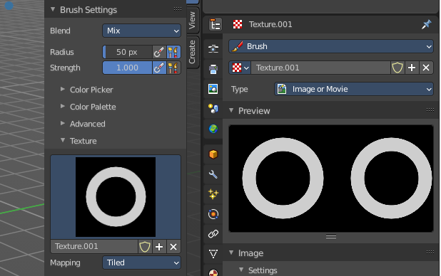
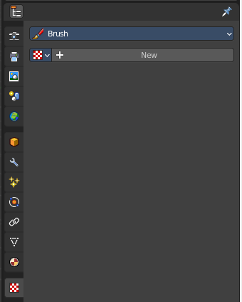
Brush drop down box
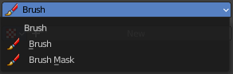
What kind of brush texture you want to create. A brush texture, or a brush mask texture.
Brush textures appears in the texture panel of the brush settings. Brush mask textures appears in the texture mask panel of the brush settings.
Texture property
Texture browser
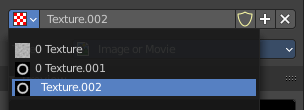
A texture browser with the available textures.
| Entry | What it does |
|---|---|
| Edit Box | The name of the currently active palette. You can also rename the palette here. A click into the edit box makes the name editable. |
| Number of users | See how many users the palette currently has. |
| Fake User | Fake User sets the element to have a fake user. Data without a user is normally not saved. But sometimes you want to force the data to be kept even when the data block has no user. |
| Entry | What it does |
|---|---|
| New Texture | Add a new texture |
| Remove Texture | Removes the texture as the active texture. Note that the texture is still in the list. |
Type
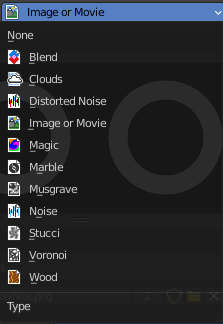
The image type to use. Image or Movie uses pixel based material that you have to load externally. The rest are procedural computer generated textures. Some of them are based at different noise algorithms.
Each texture type has its own settings which will be described below.
Preview panel
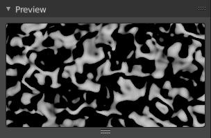
A preview window for the texture.
Blend panel
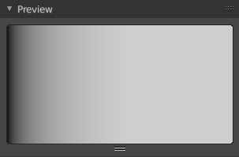
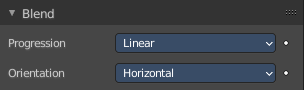
Image Type Blend.
Progression
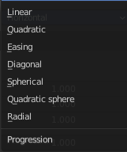
The style of the color blending.
Orientation
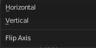
The direction. Horizontal or vertical.
Clouds panel
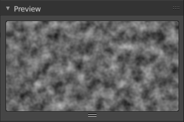
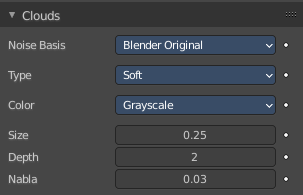
Image type clouds
Noise Basis
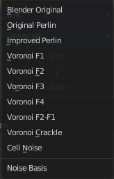
What noise method to use.
Type
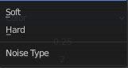
Smooth transitions or sharp transitions. Changes contrast and sharpness.
Color
Grayscale
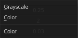
Grayscale based noise. The value returned is greyscale 8 bit.
Color
The noise gives an RGB value. The value returned is rgb 24 bit.
| Entry | What it does |
|---|---|
| Size | The dimension of the Noise table. |
| Depth | The depth of the Clouds calculation. A higher number results in a long calculation time, but also in finer details. |
| Nabla | Size of derivate offset used for calculating normal. In order to calculate a normal, you usually use three samples in texture space. Typically that's the current sample location, and two other positions in texture U and V directions. This "nabla" value defines how far away these positions are. |
Distorted Noise panel
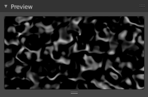
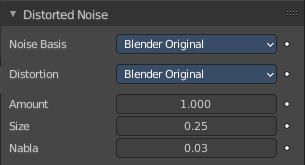
Image type Distorted Noise
Noise Basis
What noise method to use.
Distortion
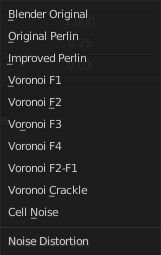
What noise method to use for the distortion.
| Entry | What it does |
|---|---|
| Amount | The amount of distortion. |
| Size | The dimension of the Noise table. |
| Nabla | Size of derivate offset used for calculating normal. In order to calculate a normal, you usually use three samples in texture space. Typically that's the current sample location, and two other positions in texture U and V directions. This "nabla" value defines how far away these positions are. |
Image panel - Settings Subpanel
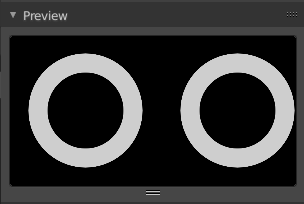
Image type Image or Movie.
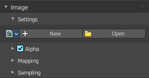
Image Property
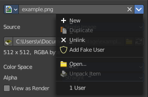
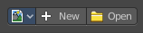
Load an image and / or switch to other images.
Texture browser
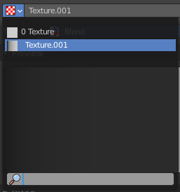
A texture browser with the available textures.
| Entry | What it does |
|---|---|
| Edit Box | The name of the currently active palette. You can also rename the palette here. A click into the edit box makes the name editable. |
| Unlink Data-Block | Remove the texture. |
File selector menu
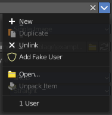
New
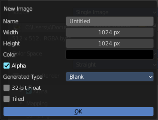
Create a new image.
Creates a new image. You will get a dialog where you can define settings for the new image.
| Entry | What it does |
|---|---|
| Name | The name of the new image |
| Width | The width of the new image. |
| Height | The height of the new image. |
Color
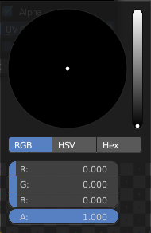
Adjust the color of the new image. A click will call a color picker.
Alpha
Check this checkbox if the new image should have an alpha channel.
Generated Type
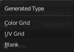
Here you can define what kind of texture you want to create.
Blank is one plain color.
UV Grid is a checker texture in black and white.
Color Grid is a colored checker texture.
32 Bit Float
Check this checkbox if the image should be in 32 Bit floating point bit depth per channel. Else it is in 8 bit per channel.
Duplicate
Not supported here.
Unlink Datablock
This deletes the selected image. Unfortunately not immediately. You need to save the scene and to reload it.
And you need to make sure that it is not linked to anything else. A mesh or a fake user for example. Have a look if there is a number besides the F button. When this is the case then the image has still a user, and so still loads with loading the scene.
| Entry | What it does |
|---|---|
| Fake User | Wit this button you assign a fake user to this selected image. Data, like images, that is not longer linked to anything else gets removed when you save and reload a scene. Bforartists has the concept of fake users to go around this behavior. An image with a fake user is in fact linked to something. And so it is not lost when you save and reload the scene. |
| Open Image | Opens the file browser to load an image. |
| Unpack | Unpack packed files to a directory. |
| User | The number of users that uses this data. Data with a user number of 0 will be removed with closing Bforartists. |
Source
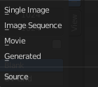
Choose the image type. This type gets usually automatically set. When you create a new image, then this image is generated. When you load an image then the Source switches to Single Image.
Generated images does not have a path.
Source Type Generated
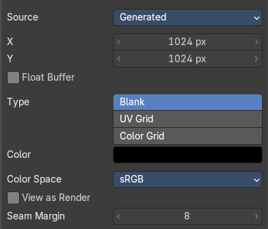
X / Y
The image width and height.
Float Buffer
Use a floating point buffer. 8 Bit images uses integers. 32 Bit works with floats.
Generated Type Blank
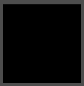
This type displays an image with one blank color
Color
The color of the blank image.
Generated Type UV Grid
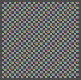
This type displays a with a black and white checker texture but colored dots.
Generated Type Color Grid
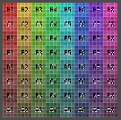
This type displays a with a colored checker texture with numbers.
Color Space
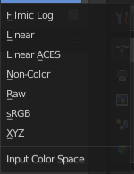
Choose the color space type for the image.
View as Render
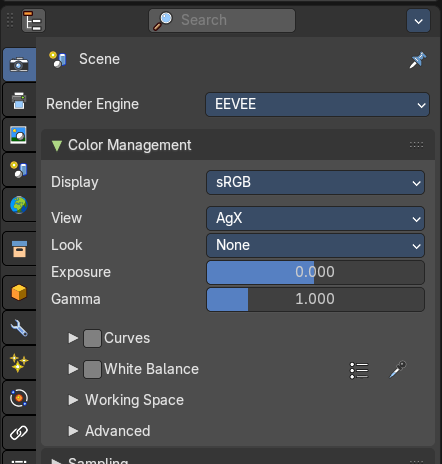
Displays the image with the color management settings from the render tab.
Source Type Movie + Image Sequence
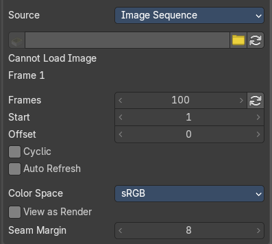
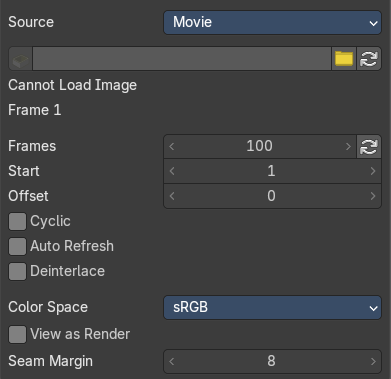
Path edit box
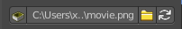
| Entry | What it does |
|---|---|
| Pack | With this button you can pack the movie or the image sequence into the blend file. It gets packed when you save the blend file the next time. |
| Path edit box | See and edit the path to your movie or image sequence files. |
| Open | Open a new movie or image sequence files. A file dialog will appear. |
| Refresh | Reread the movie or image sequence files. |
| Entry | What it does |
|---|---|
| Info string | Some information about the currently loaded movie. Frames, resolution and color space. |
| Frames | The number of frames of the movie or image sequence. |
| Start | The start frame of the movie or image sequence |
| Offset | Offset the number of the frame to use in the animation. -1 means off. |
| Cyclic | Cycle the images in the movie. |
| Auto Refresh | Always refresh image on frame changes. |
| Deinterlace | Movie only. Deinterlace the movie file on load. |
Color Space
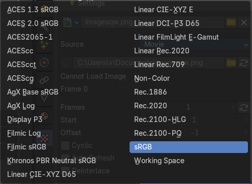
Choose the color space type for the movie or image sequence files.
View as Render
Display the image with using the color management settings.
Source Type Single Image
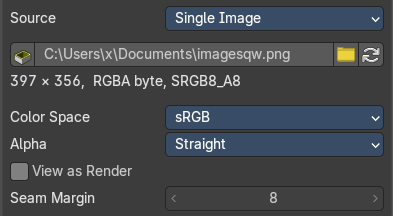
Path edit box
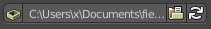
| Entry | What it does |
|---|---|
| Pack | With this button you can pack the movie or the image sequence into the blend file. It gets packed when you save the blend file the next time. |
| Path edit box | See and edit the path to your movie or image sequence files. |
| Open | Open a new movie or image sequence files. A file dialog will appear. |
| Refresh | Reread the movie or image sequence files. |
Info string
Some information about the currently loaded image. Resolution and color space.
Color Space
Choose the color space type for the movie or image sequence files.
Alpha
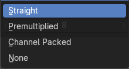
Choose the alpha channel mode.
View as Render
Display the image with using the color management settings.
Seam Margin
This option belongs to the UV Editor, and has no effect in the Image editor. Take a margin into account when fixing UV seams during painting.
Source Type Udim
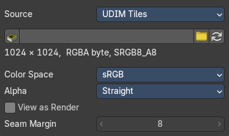
UDIM is an enhancement to the UV mapping and texturing workflow. And does not belong here. But in the UV Editor. It is just in the list because it shares the same menus with the UV Editor.
Image panel - Alpha Subpanel
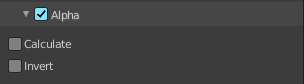
Use the Alpha channel that is stored in the image.
| Entry | What it does |
|---|---|
| Calculate | Calculate an alpha based on the RGB values of the Image. Black (0, 0, 0) is transparent, white (1, 1, 1) opaque. Enable this option if the image texture is a mask. Note that mask images can use shades of gray that result in semi-transparency, like ghosts, flames, and smoke/fog. |
| Invert | Reverses the alpha value. Use this option if the mask image has white where you want it transparent and vice versa. |
Image panel - Mapping Subpanel
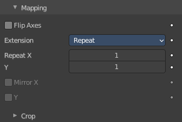
Control how the image is mapped or projected onto the 3D model.
Flip Axes
Rotates the image 90 degrees counterclockwise when rendered.
Extension
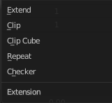
How the image is extrapolated past the bounds.
Extend
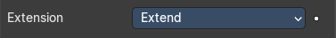
Outside the image the colors of the edges are extended.
Clip
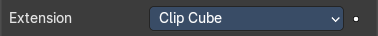
Clip to image size and set exterior pixels as transparent. Outside the image, an alpha value of 0.0 is returned. This allows you to ‘paste’ a small logo on a large object.
Clip Cube
Clips to cubic-shaped area around the images and sets exterior pixels as transparent. The same as Clip, but now the ‘Z’ coordinate is calculated as well. An alpha value of 0.0 is returned outside a cube-shaped area around the image.
Repeat
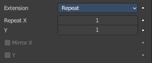
The image is repeated horizontally and vertically.
| Entry | What it does |
|---|---|
| Repeat X / Y | X/Y repetition multiplier. |
| Mirror X / Y | Mirror on X/Y axes. These buttons allow you to map the texture as a mirror, or automatic flip of the image, in the corresponding X and/or Y direction. They become active when the Repeat value is higher than 1. |
Checker
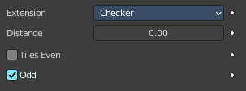
Checkerboards quickly made. You can use the option size on the Mapping panel as well to create the desired number of checkers.
| Entry | What it does |
|---|---|
| Distance | Governs the distance between the checkers in parts of the texture size. |
| Tiles Even / Odd | Set even/odd tiles. |
Crop subpanel
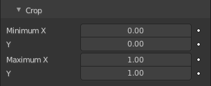
Crop Minimum X / Y + Crop Maximum X / Y
The offset and the size of the texture in relation to the texture space. Pixels outside this space are ignored. Use these to crop, or choose a portion of a larger image to use as the texture.
Image panel - Sampling Subpanel
Interpolation
Interpolate pixels using selected filter type.
Size
Multiply the filter size used by interpolation.
Magic panel
Image type Magic.
| Entry | What it does |
|---|---|
| Depth | The depth of the calculation. A higher number results in a long calculation time, but also in finer details. |
| Turbulence | The strength of the pattern. |
Marble panel
Image type Marble.
Noise Basis
What noise method to use.
Pattern
Settings for soft to more clearly defined Marble.
Second basis
Shape of wave to produce bands.
Type
The noise function works with two methods. Soft or hard.
| Entry | What it does |
|---|---|
| Size | The dimensions of the noise table. |
| Depth | The depth of the Marble calculation. A higher value results in greater calculation time, but also in finer details. |
| Turbulence | The turbulence of the sine bands. |
| Nabla | Size of derivate offset used for calculating normal. In order to calculate a normal, you usually use three samples in texture space. Typically that's the current sample location, and two other positions in texture U and V directions. This "nabla" value defines how far away these positions are. |
Musgrave panel
Image type Musgrave.
Noise Basis
What noise method to use.
Type
What noise type to use.
| Entry | What it does |
|---|---|
| Size | The input noise scale. |
| Nabla | Size of derivate offset used for calculating normal. In order to calculate a normal, you usually use three samples in texture space. Typically that's the current sample location, and two other positions in texture U and V directions. This "nabla" value defines how far away these positions are. |
| Dimension | Fractal dimension controls the contrast of a layer relative to the previous layer in the texture. The higher the fractal dimension, the higher the contrast between each layer, and thus the more detail shows in the texture. |
| Lacunarity | Lacunarity controls the scaling of each layer of the Musgrave texture, meaning that each additional layer will have a scale that is the inverse of the value which shows on the button. i.e. Lacunarity = 2 –> Scale = 1/2 original. |
| Octaves | Octave controls the number of times the original noise pattern is overlayed on itself and scaled/contrasted with the fractal dimension and lacunarity settings. |
| Intensity | Light intensity. Called Offset for Hetero Terrain. |
Offset
Hybrid Multifractal and Ridged Multifractal type. Both have a “Fractal Offset” button that serves as a “sea level” adjustment and indicates the base height of the resulting bump map. Bump values below this threshold will be returned as zero.
Gain
Hybrid Multifractal and Ridged Multifractal type. Setting which determines the range of values created by the function. The higher the number, the greater the range. This is a fast way to bring out additional details in a texture where extremes are normally clipped off.
Stucci panel
Image type Stucci.
Noise Basis
What noise method to use.
Pattern
Plastic is the standard Stucci, while the “walls” is where Stucci gets it name. This is a typical wall structure with holes or bumps.
Type
There are two methods available for working with Noise. Soft or Hard.
| Entry | What it does |
|---|---|
| Size | Dimension of the Noise table. |
| Turbulence | Depth of the Stucci calculations. |
Voronoi panel
Image type Voronoi.
Distance Metric
This procedural texture has seven Distance Metric options. These determine the algorithm to find the distance between cells of the texture.
Exponent
The Minkowski setting has a user definable value (the Exponent button) which determines the Minkowski exponent e of the distance function.
(xe + ye + ze)1/e
A value of one produces the Manhattan distance metric, a value less than one produces stars (at 0.5, it gives a Minkowski 1/2), and higher values produce square cells (at 4.0, it gives a Minkowski 4, at 10.0, a Chebychev). So nearly all Distance Settings are basically the same – a variation of Minkowski.
Coloring
Different ways to calculate color and intensity of the texture output.
Feature Weights subpanel
These four sliders at the bottom of the Voronoi panel represent the values of the four Worley constants, which are used to calculate the distances between each cell in the texture based on the distance metric.
Wood panel
Image type Wood.
Noise Basis
What noise method to use.
Pattern
The wood pattern.
Type, Size Turbulence and Nabla are just active with Pattern Type Band Noise and Ring Noise.
Second basis
Shape of wave to produce bands.
Type
Smooth transitions or sharp transitions. Changes contrast and sharpness.
| Entry | What it does |
|---|---|
| Turbulence | The turbulence of band noise and ring noise. |
| Nabla | Size of derivate offset used for calculating normal. In order to calculate a normal, you usually use three samples in texture space. Typically that's the current sample location, and two other positions in texture U and V directions. This "nabla" value defines how far away these positions are. |
Colors Panel
| Entry | What it does |
|---|---|
| Clamp | Clamps the range by setting the negative rgb and intensity values to zero. |
| Multiply R G B | Multiply factor for the r g and b channel. |
| Brightness | The brightness of the texture. |
| Contrast | The contrast of the texture. |
| Saturation | The saturation of the texture. |
Color ramp subpanel
Specify a range of colors based on color stops. The color between the color stops gets interpolated.
| Entry | What it does |
|---|---|
| + | Add a stop to your color ramp. The stop will be added after the selected one, in the middle to the next one. |
| - | Deletes the selected color stop from the list. |
Tools menu
| Entry | What it does |
|---|---|
| Flip Color Ramp | Flips the gradient, inverting the values of the color ramp. |
| Distribute Stops from Left | Rearrange the stops so that every step has the same space to the right. |
| Distribute Stops Evenly | Space between all neighboring stops becomes equal. |
| Eyedropper (pipette icon) E | An Eyedropper to sample a color or gradient from the interface to be used in the color ramp. |
| Reset Color Ramp | Resets the color ramp to its default state. |
Color Mode
| Entry | What it does |
|---|---|
| RGB | Blends color by mixing each color channel and combining. |
| HSV/HSL | Blends colors by first converting to HSV or HSL, mixing, then combining again. This has the advantage of maintaining saturation between different hues, where RGB would de-saturate, this allows for a richer gradient. |
Interpolation
| Entry | What it does |
|---|---|
| Ease | Uses an Ease Interpolation for the color stops. |
| Cardinal | Uses a Cardinal Interpolation for the color stops. |
| Linear | Uses a Linear Interpolation for the color stops. |
| B-Spline | Uses a B-Spline Interpolation for the color stops. |
| Constant | Uses a Constant Interpolation for the color stops. |
Color Ramp
The color band. A click at one of the color stops makes it the active one. You can move the color stops by clicking at them and dragging them around.
Active Color Stop elements
Adjust the active color stop.
Choose active color stop
Choose the color stop by index.
| Entry | What it does |
|---|---|
| Pos | The position of the active color stop. The range goes from 0.000 to 1.000 |
| Color | The color of the active color stop. Clicking at it opens a color picker. |
Custom Properties Panel
Allows to define custom properties that can be used for scripting.
Here you might also find custom properties from addons or scripts.
Add
Adds a new property.
Edit
Opens a panel where you can adjust the settings for the custom property.
Remove
Removes the property.